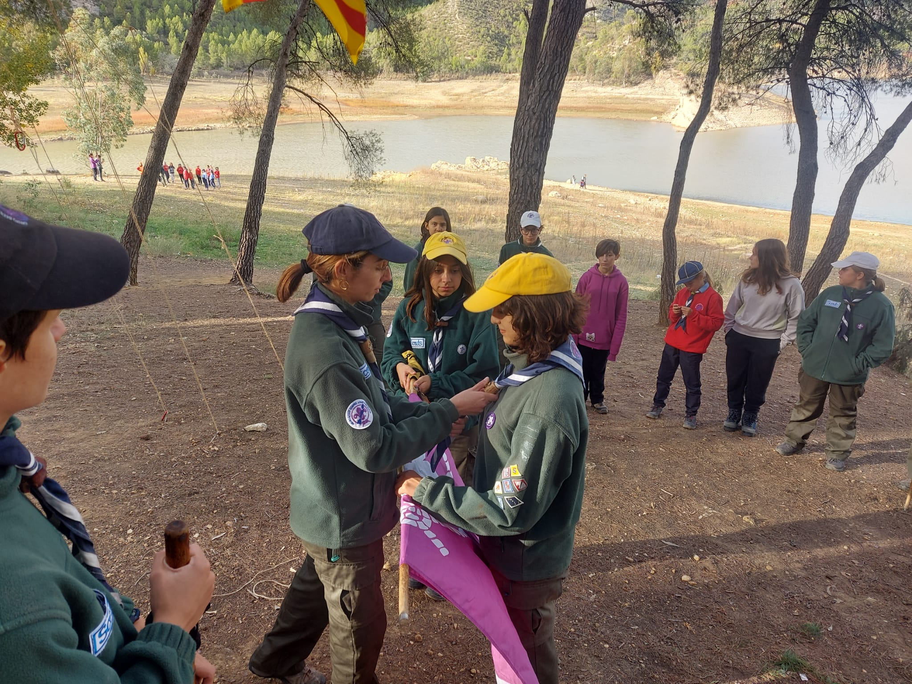
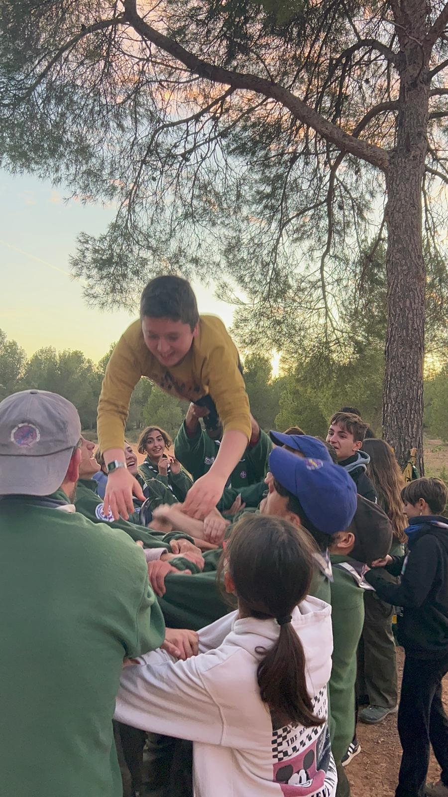

LLa Tropa se subdivide en varias patrullas, cada una de las cuales toma el nombre de un animal
Actualmente en el Sempre Avant tenemos 4 patrullas:
Unirse a la Tropa te permitirá vivir un montón de aventuras junto a gente de tu misma edad. En la tropa harás nuevos amigos, convivirás con la naturaleza, conocerás mejor tu ciudad, y aprenderás muchas técnicas scouts (nudos, cartografía, cocina, socorrismo...) Si quieres formar parte de nuestra Tropa pasate por nuestro local, allí nos reunimos todos los sábados, de 10h a 13h.
¡Anímate y ven a conocernos!